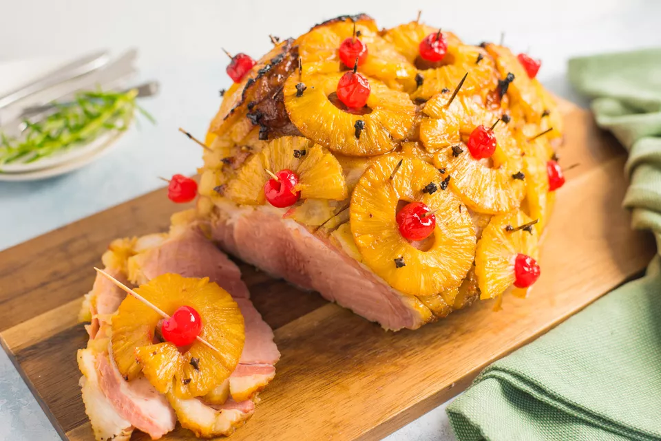

Ham With Pineapple

Description
Wow, what a colorful Christmas Dish. I can't decide what the best part
is. Is it the Ham, the Pineapple, or the skewered Maraschino Cherries?
Ham is pork from a leg cut that has been preserved by wet or dry
curing, with or without smoking.[1] As a processed meat, the term
"ham" includes both whole cuts of meat and ones that have been
mechanically formed.
Ingredients
- 1 12 pound bone-in ham
- 1.5 cups whole cloves
- 1 20 oz can pineapple rings in heavy syrup
- 1/2 cup packed brown sugar
- 1 12 fl oz can lemon-lime flavored carbonated soda
- 1 4 oz jar chopped maraschino cherries
Steps
- Preheat the oven to 325 degrees F
- Place ham in a roasting pan. Score the rind of the ham with a
diamond pattern. Press a clove into the center of each diamond.
Drain the juice from the pineapple rings into a medium bowl,
and stir in the brown sugar and lemon-lime soda. Coat
the ham with this mixture. Arrange the pineapple rings over the
outside of the ham. Place a maraschino cherry in the center of
each pineapple ring, and secure with a toothpick.
- Bake uncovered for 4 to 5 hours, basting frequently with the
juices, until the internal temperature of the ham is 160 degrees
F (72 degrees C). Be sure the meat thermometer is not touching the
bone. Remove toothpicks before serving.